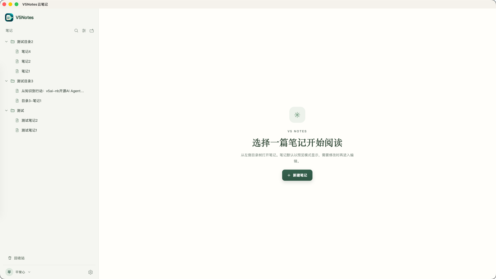
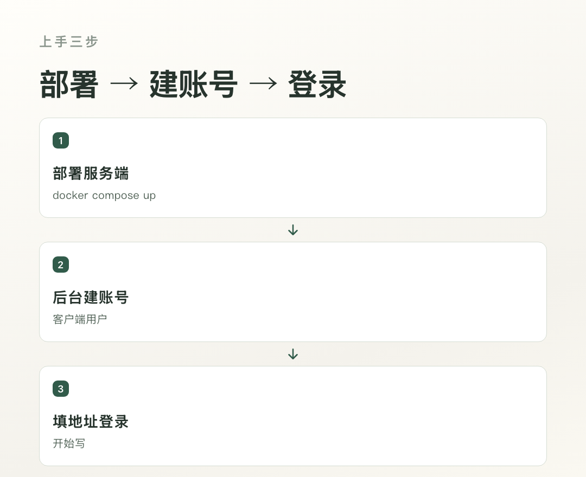

给个人和小团队的私有云笔记 · 栏目「自托管笔记」
笔记存在谁家？我把它搬回了自己的服务器
摘要：一套能私有部署的 Markdown 云笔记：三语界面、30 天回收站、历史版本，装在自己的服务器上。
你有没有想过，写了三五年的笔记，其实一直存在别人的服务器上？
换台电脑、服务停掉、想整包导出，总有一刻会让人心里打个问号。
V5Notes 是我最近在用的一套开源 Markdown 云笔记：能装在自己的服务器上，桌面端照常写，换台电脑也能接着看。
一、一个很日常的小场景
在公司写了一半的笔记，回家打开另一台电脑，登录同一个服务器，目录和正文都还在——不用发文件、不用同步盘，也不用猜哪份是最新的。
家里有几个人想共用一个笔记库，就在管理后台各开一个账号，谁写谁的，互不打扰。

二、三步就能用起来
第一步，用 Docker Compose 把整套服务拉起来：数据库、缓存、API、管理后台一次到位。
第二步，进管理后台建一个「客户端用户」账号。第三步，在桌面客户端填上服务器地址登录，就能开写。

三、写作这块，它没偷懒
目录和笔记混在一棵树里，搜索、新建、重命名、删除都在一处；编辑器能在预览、编辑、源码之间来回切，撤销记录还留着。
专注模式收起侧栏只剩正文，右侧可以拉出大纲或在全文里查找。Ctrl/Cmd+S 保存，有改动切走前会先提醒你。
好的写作工具，是让你忘记工具本身。

四、数据在自己手里，才是最踏实的
笔记是一篇一份 Markdown，正文、目录、历史版本都在你自己的数据库里；附件也在自己的文件目录，备份时一起拷走就行。
删错了有 30 天回收站，改乱了能翻历史版本预览恢复。界面支持简体中文、繁体中文和英文，家里长辈也能用。
· 一篇一份 Markdown，随时整包带走
· 回收站 30 天 + 历史版本，改删都有退路
· 简体 / 繁体 / 英文，三语界面
五、它不做什么，适合谁
它不是多人实时协同工具：同一篇笔记两个人同时改，后保存的会覆盖先保存的，要靠历史版本找回。
它也不替你做运维，备份、证书、升级还得自己来。它适合愿意为一台服务器负责的个人、家庭和小团队——想要「笔记归自己」，又不想牺牲写作体验的人。
一句话：把笔记搬回自己家，其实没有想象中麻烦。
官网：https://v5notes-website.v5ai.xin/
项目地址：https://github.com/zyw/v5notes
Gitee：https://gitee.com/zyw/v5notes
官网：v5notes-website.v5ai.xin ｜ 源码：github.com/zyw/v5notes ｜ 关注「自托管笔记」回复「笔记」领取部署与备份清单